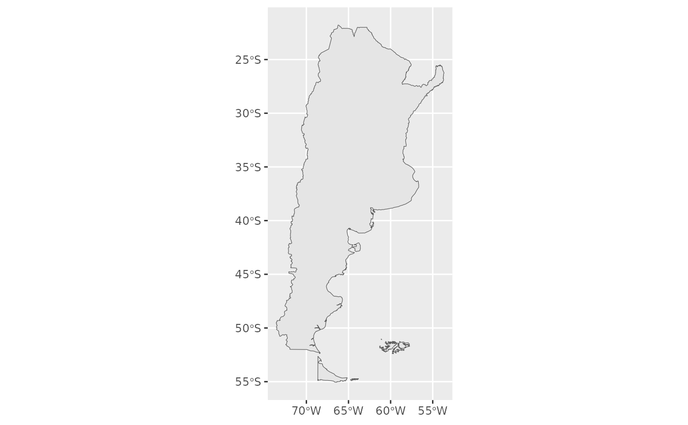
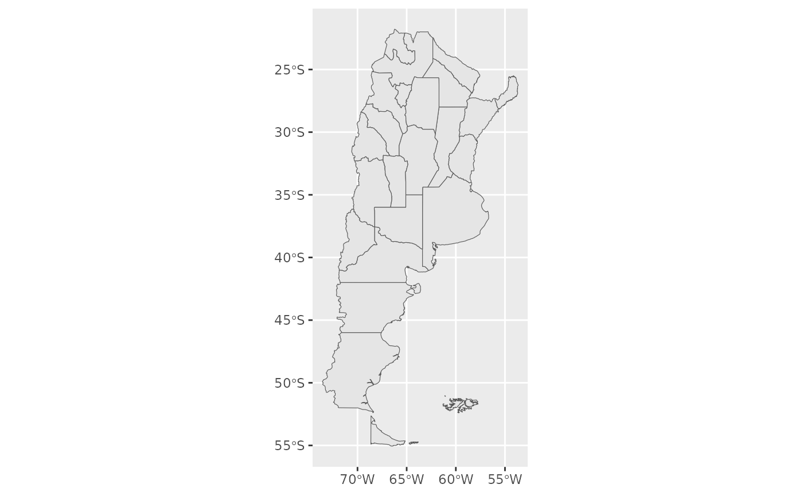

Mapas de Argentina, sus provincias, departamentos y paises limítrofes. Los mapas de departamentos surgen del repositorio público del Instituto Geográfico Nacional, mientas que el mapa de países limítrofes, Argentina y sus provincias son parte del repositorio Natural Earth.
Uso
mapa_argentina()
mapa_provincias(provincias = NULL, departamentos = FALSE)
mapa_argentina_limitrofes()
mapa_departamentos(provincias = NULL)Argumentos
- provincias
vector de caracteres con los nombres de provincias a filtrar. Si es
NULL, devuelve todas las provincias de Argentina.- departamentos
lógico. Si es
TRUEgrafica los departamentos.
Valor
Devuelve una tibble con las variables necesarias para generar un mapa utilizando ggplot2 y sf.
Ejemplos
library(ggplot2)
# Solo Argentina
ggplot() +
geom_sf(data = mapa_argentina())

# Argentina y sus provincias
ggplot() +
geom_sf(data = mapa_provincias())

# Algunas provincias
ggplot() +
geom_sf(data = mapa_provincias(provincias = c("La Pampa", "Córdoba")))
# Algunas provincias y sus departamentos
ggplot() +
geom_sf(data = mapa_provincias(provincias = c("La Pampa", "Córdoba"),
departamentos = TRUE))
#> Descargando mapa...